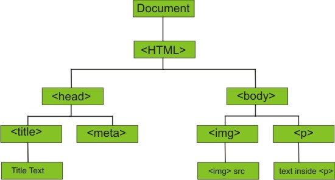

Java para Web
HTML 5
Hypertext Markup Language é a linguagem de marcação padrão para a criação de páginas Web e aplicações Web.
Hipertexto é um texto com propriedade de conter referências (hyperlinks) para outros documentos ou para dentro de si próprio.
O HTML é responsável por estruturar uma página Web através de tags que podem ou não conter atributos.
Cada documento HTML deve conter um !DOCTYPE.
Observações importantes:
- HTML NÃO é uma linguagem de programação
- Tags com letras minúsculas SEMPRE, por favor!
- Abriu uma Tag? Feche-a!
CSS 3
Cascading Stylesheet é uma linguagem de folha de estilo usada para descrever a aparência de um documento como o HTML utilizando seletores e pseudo-elementos e pseudo-classes. Antigamente, a estilização de uma página ficava junto com o HTML, o que hoje em dia não é considerado boa prática. O CSS adota a maior parte das estilizações antigas e expande-a muito mais!
Este é o "box-model" que o CSS usa para estilizar os elementos de uma página:

Existem 3 formas de utilizar o CSS: Inline, Interna e Externa. São explicadas no slide a seguir.
Formas de usar sua folha de estilo CSS 3
Inline
<p style="color: red; margin-top:10px;">
Interna
<html>
<head>
<style>
body {
background-color: blue;
}
h1 {
color: black;
margin-left: 10px;
}
</style>
</head>
<body>
...
Externa
<html>
<head>
<link rel="stylesheet" type="text/css" href="mystyle.css">
...
Leia mais:
Shorthand propertiesJavaScript
JavaScript é uma linguagem de programação de alto-nível, interpretada, dinâmica* e fracamente tipada. Ela faz parte do trio fundamental da Web. Ela suporta diversos tipos de paradigmas de programação como: orientada a eventos, funcional e imperativo (até orientada a objeto).
Suas funções principais são manipular o DOM e adicionar "inteligência" às páginas Web.
Java e JavaScript são MUITO diferentes! Por exemplo:
- Java tem tipagem estática enquanto o JS é dinâmico
- No JS declaramos variáveis com "var", "let" e "const"
- O JS não precisa ser compilado por nós antes de ser executado
- JS não tem suporte para Multithread
* realiza em tempo de execução o que as estáticas realizam em tempo de compilação.
DOM
É uma API multiplataforma, independente de linguagem que trata o HTML, XHTML ou XML como uma estrutura em árvore onde cada nó é um objeto que representa uma parte do documento. Esses objetos podem ser manipulados programaticamente atráves do JavaScript.
Fundamentos para Web
URL
Uniform Resource Locator é a informação que combina o meio para se localizar um determinado recurso e a maneira de obtê-lo.
Exemplo: Uma URL de página da web. Ela é divida da seguinte forma:
| Scheme | Absolute Root | Subdomain | Domain | Top-level Domain | Port | Path | Query String | Fragment identifier |
|---|---|---|---|---|---|---|---|---|
| https: | // | www. | .com | :443 | /index.html | id=123 | #friends |
Scheme
Schemes são formas de uma URL identificar qual é o protocolo a ser utilizado para se obter um recurso. Exemplos:
http, https, ftp, iiop, etc.
Fundamentos para Web
Absolute root
É a raiz do diretório da URL em sua forma absoluta. Isso quer dizer que a descrição do diretório deve partir da raiz determinada pela instalação do seu sistema operacional. Ele oferece um "guia" passo-a-passo de como chegar a um determinado arquivo ou diretório. Por exemplo:
C:\Program Files\Java\jdk1.8.0_172
Já uma URL relativa pode variar conforme a localização do diretório usado como referência (working directory). Este tipo é mais flexível, e serve para que diretórios possam ser transportados ou usados em outros lugares sem que seja necessário alguma intervenção no código. Por exemplo:
documentos/impressoes/boleto.pdf
Fundamentos de Web
Subdomain (Subdomínio)
É um domínio que pertence a outro domínio maior. O que é geralmente "www" pode ser "www1", "developers", "mail", etc.
Exemplos:
- https://en.wikipedia.org
- https://web.whatsapp.com/
- https://signup.heroku.com/
- https://senai-java.slack.com
- https://developers.google.com
Domain (Domínio)
Domínios são usados para identificar um ou mais endereços de IP de uma forma mais facilmente lembrada por um ser humano. Exemplos:
- www.google.com - 172.217.30.36
- www.facebook.com - 31.13.85.38
- www.wikipedia.org - 208.80.154.224
Fundamentos de Web
Top-level domain (Domínio de topo)
Ocupa o lugar mais alto na hierarquia de domínios. A maior parte destes são previamente estabelecidos por órgãos específicos, escolhidos pelo ICANN (Internet Corporation for Assigned Names and Numbers).
Exemplos:
Fundamentos de Web
Portas
Uma porta é a ponta final de uma comunicação (em redes de computadores). Tanto conexões físicas ou sem-fio são terminadas nas portas dos dispositivos de hardware. Já no software, uma porta é uma
construção lógica que identifica um processo ou tipo específico de serviço de rede. O número dela está sempre associado à um endereço IP e elas possuem identificação por protocolo que implementam (TCP ou UDP, geralmente).
Exemplos:
- 20: File Transfer Protocol (FTP) - Transferência de dados
- 21: File Transfer Protocol (FTP) - Controle de Comandos
- 22: Secure Shell (SSH) - Login Seguro
- 23: Telnet - serviço de login remoto, mensagens sem criptografia
- 25: Simple Mail Transfer Protocol (SMTP) - Roteamento de e-mails
- 53: Domain Name System (DNS) - Serviço de DNS
- 80: Hypertext Transfer Protocol (HTTP) - usado na World Wide Web
- 110: Post Office Protocol (POP3)
- 119: Network News Transfer Protocol (NNTP)
- 123: Network Time Protocol (NTP)
- 143: Internet Message Access Protocol (IMAP) - gerenciamento de correio digital
- 161: Simple Network Management Protocol (SNMP)
- 194: Internet Relay Chat (IRC)
- 443: HTTP Secure (HTTPS) HTTP over TLS/SSL
Fundamentos de Web
Path (Caminho)
Um path representa o caminho definido por a sua aplicação para algum recurso dela já dentro do servidor web.
Exemplos:
http://brasil.campus-party.org/cprondonia/ingressos/
https://www.vagalume.com.br/la-casa-de-papel/bella-ciao.html
Query String
É parte da URL com dados que não se encaixam convenientemente na estrutura hierárquica do path (caminho). Normalmente, inclui informações adicionadas pelo navegador ou por alguma outra aplicação cliente como parte de um formulário HTML, por exemplo, e vem em formato chave/valor.
Exemplos:
https://vimeo.com/search?q=step+into+sensory+box
https://www.buscape.com.br/search/aspirador-de-po?fromSearchBox=true&produto=aspirador+de+p%C3%B3
Fragment Identifier
Um fragment identifier é uma sequencia de caracteres que representa um recurso subordinado a outro. No caso da Web, normalmente é um "id" de algum elemento dentro de uma página HTML.
Exemplo:
https://en.wikipedia.org/wiki/Fragment_identifier#Basics
HTTP
Projeto iniciado em 1989 por Tim Berners-Lee, o Hypertext Transfer Protocol
é um protocolo (conjunto de normas) para sistemas de informação de hipermídia (mídia não-linear), colaborativo (RFCs) e distribuído (várias plataformas, sem royalties).
Ele é a fundação da comunicação de informações na World Wide Web.
HTTP é o protocolo de troca ou transferência desses hipertextos.
A primeira definição (e a que ainda está em amplo uso) é a HTTP/1.1, que foi sucedida pela HTTP/2 (padronizada em 2015) e agora é suportada pelos maiores navegadores e servidores web usando TLS (Transport Layer Security).
Coordenando o desenvolvimento do protocolo está o IETF (Internet Engineering Task Force).
Leitura recomendada: HTTP/2
Métodos HTTP
GET
Solicita uma representação de algum recurso específico (uma página web, por exemplo). Deve apenas retornar dados!
HEAD
Também solicita uma resposta igual ao GET, mas somente seu cabeçalho.
POST
Normalmente, submete informações que podem alterar estado ou incluir dados do lado do servidor.
PATCH
Utilizado para realizar modificações parciais em um recurso.
PUT
Substitui totalmente um recurso por outro.
DELETE
Solicita o apagamento de algum recurso.
Anatomia das requisições HTTP

Requisição e Resposta (Request and Response)
Requisição
GET /get
cache-control: no-cache
postman-token: 87fb7a84-9204-45a3-abb2-f45dabed5d2e
user-agent: PostmanRuntime/7.1.5
accept: */*
host: httpbin.org
accept-encoding: gzip, deflate
HTTP/1.1 200
status: 200
connection: keep-alive
server: gunicorn/19.9.0
date: Fri, 27 Jul 2018 21:00:43 GMT
content-type: application/json
content-length: 454
access-control-allow-origin: *
access-control-allow-credentials: true
via: 1.1 vegur
{ "args": { "nome": "Teste" }, "headers": { "Accept": "*/*", "Accept-Encoding": "gzip, deflate", "Cache-Control": "no-cache", "Connection": "close", "Content-Type": "application/x-www-form-urlencoded", "Host": "httpbin.org", "Postman-Token": "da68f1b9-12dc-4321-bb07-6c51cc6850d0", "User-Agent": "PostmanRuntime/7.1.5" }, "origin": "189.19.219.247", "url": "https://httpbin.org/get?nome=Teste" }
HTTPS
HTTP Secure é uma extensão do HTTP para uma comunicação segura através de criptografia. A tecnologia empregada nessa criptografia era a SSL, que agora passa a ser depreciada frente à sua sucessora a TLS.
Postman
Postman é uma ferramenta que auxilia o desenvolvimento e teste de APIs Web.
Relative Path
Considere a seguinte estrutura:
/
|-> documentos
|-> projetos
|-> contas
|-> pagas
|-> nao_pagas
|-> nao_pagarei
|-> fotos
|-> viagens (este é seu working directory)
|-> internacionais
|-> da_hora
|-> porcaria
|-> nacionais
|-> da_hora
|-> porcaria
|-> familia
|-> comprometedoras
|-> videos
Situação 1 - Acessar conteúdo no diretório /fotos/viagens/internacionais
Como o diretório alvo está dentro do CWD (current working directory, ou diretório de trabalho atual), basta se referir a ele como: internacionais
Situação 2 - Acessar conteúdo no diretório /fotos/viagens/internacionais/porcaria
Como o diretório alvo está dentro de um subdiretório do CWD, basta se referir a ele como: internacionais/porcaria
Situação 3 - Acessar conteúdo no diretório /fotos/familia
Agora o recurso está localizado no diretório pai. Como proceder? Para referenciar um diretório acima, usamos os "..", dessa forma: ../familia
Situação 4 - Acessar conteúdo no diretório /documentos/contas
Desgraça pouca é bobagem. Agora querem que você use um recurso em um local mais escondido. Sem problemas! Para acessar o diretório /documentos, basta usar a notação ".." duas vezes, dessa forma:
../../documentos/contas
Tags
Tags são símbolos textuais que, ao serem interpretados por softwares preparados, influenciam na estruturação e (às vezes) renderização da página Web. Elas servem para marcar partes de um documento e lhes conferir alguma propriedade.
Podem possuir atributos que alteram seu comportamento e para utilizá-las basta colocar o texto desejado entre a tag de abertura e fechamento.
OBS.: É possível colocar tags dentro de outras tags.
Abertura
<div>
<p>
<h1>
Fechamento
</div>
</p>
</h1>
É possível fechar uma tag de abertura quando não se deseja colocar algum conteúdo nelas. São chamadas "self-closing tags".
<img />
<br />
Voltar
Atributos de tag
Às vezes o comportamento padrão de uma tag não é exatamente o que desejamos, portanto, podemos usar o recurso de atributos que o HTML nos disponibiliza para podermos adequar melhor nosso documento ao que queremos É importante reparar que os atributos também devem ser escritos em letras minúsculas (iguais às tags) e seu valor deve estar entre aspas duplas e separados por espaços (em caso de mais de um atributo).
Atributos comuns:
- id - permite colocar um identificador para aquela tag. IDs devem ser ÚNICOS por documento! class - permite associar uma tag a um ou mais grupos semânticos, portanto, a classe pode e DEVE ser repetida através do documento. alt - exibe uma descrição sobre o texto marcado.
Exemplos de Notação:
<span class="highlight">
<p alt="Descrição">
<h1 id="titulo-trabalho">
Voltar
DOCTYPE
Deve ser a primeira coisa a ser declarada num documento HTML. Ele é uma instrução para o navegador saber qual a versão do HTML a página usa.
Exemplos de DOCTYPE:
- HTML 5 =
- HTML 4.01 Strict =
- HTML 4.01 Transitional =
- HTML 4.01 Frameset =
Existe a variante XHTML, que é o HTML com validação XML, o que torna o documento menos flexível, porém mais legível e sensível a falhas.
VoltarSeletores CSS
Um seletor CSS é um padrão de texto que serve para descrever qual(is) elemento(s) devem receber determinado estilo.
Os mais comuns são:
body {
/* seleciona elemento */
}
#main {
/* seleciona id */
}
.quebravel {
/* seleciona classe */
}
Selecionando múltiplas classes
Referência e combinação dos seletores CSS
Pseudo-elementos
Eles estendem ainda mais o poder dos seletores CSS, direcionando os comandos de estilo para partes ainda mais específicas do(s) elemento(s) selecionado(s).
Exemplo:
p::first-line {
...
}
Referência dos pseudo-elementos
Pseudo-classes
Assim como os pseudo-elementos, elas também servem para estender o poder de seleção dos seletores padrão do CSS. Só que as classes descrevem um estado especial do elemento.
Exemplo:
a:hover{
...
}
Referência dos pseudo-classes
O que é uma API?
Como uma GUI (Graphical user interface) torna mais fácil para um usuário utilizar um sistema ou parte dele, uma API (Application programming interface) serve para facilitar o uso de algumas tecnologias pelos desenvolvedores. Uma API pode abstrair um funcionamento complexo para realizar tarefas como validações e cálculos em simples chamadas de métodos, aumentando a velocidade na produção de software.
O que é um Framework?
Um Framework é uma abstração na qual um software oferece uma ou várias funcionalidades genéricas que podem ser modificadas por um desenvolvedor, tornando o que era genérico mais específico para as necessidades do sistema. Ele provê uma maneira padrão de desenvolver alguns componentes bem comuns de um sistema, de modo a poupar o novo desenvolvedor de um trabalho repetitivo.
Fim
/